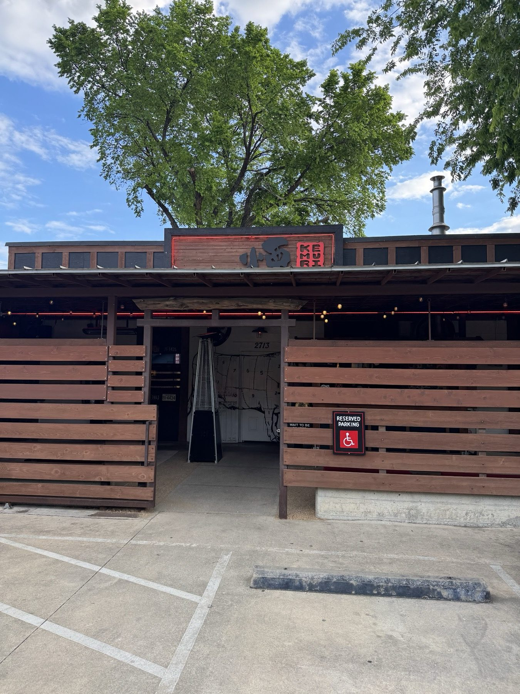

Skewers off the grill
Short rib, scallop, mushroom, wagyu and yakitori.


Izakaya & Texas BBQ · East Austin
Smoked meats, grilled skewers, sashimi specials and sake on East 2nd Street.
Small plates, ordered in rounds
Skewers, fish and a dipping ramen.
Short rib, scallop, mushroom, wagyu and yakitori.
Sashimi specials and the fish collar.

Brisket dipping ramen. The Kar-age is a house classic.


4.42572 Google reviews
This restaurant was outstanding! We showed up early, and we're seated immediately. The staff shouts out the traditional welcome in Japanese. The menu is unique, with dishes that blend some Japanese dishes with Texas BBQ. It sounds odd, but tastes great.
One of our regular spots when we visit Austin. We’re usually not big fans of any fusion concept restaurants but Kemuri’s Texas-Izakaya works very well. We love the fish-collar, the sashimi specials and anything grilled on a stick (e.g., short-ribs, scallops or yakitori). Everything is executed perfectly.
A Monday well spent at Kemuri Tatsu-ya. A friend and I met for dinner and enjoyed the tapas style meal in all its glory. We were greeted by friendly faces from our first step in the door to the last step out. From each recommendation to taste the meal exceeded expectations.

Our story
Smoked meats, composed dishes, cocktails and whisky. A Texas izakaya that sounds odd and works.
A dark, lacquered room with a lucky cat at the host stand. The grill sits behind an open counter.
Visit
2713 E 2nd St, Austin, TX 78702
Reserving ahead is wise. The wait is not usually long.